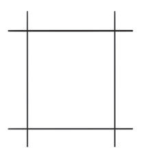
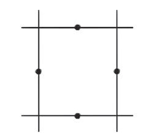
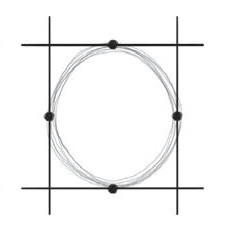
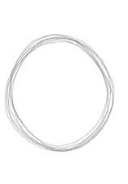

(iii) Chora umbo la duara kwa kufuata alama za nukta ulizoweka kwenye kuta za mraba kama linavyoonekana katika hatua ya 3; na
(iv) Futa umbo la mraba na uache duara lenyewe kama linavyoonekana katika hatua ya 4.

1

2

3

4
Kielelezo namba 1: Hatua za uchoraji wa umbo la duara
Maumbo ya mraba na mstatili
Maumbo haya hujulikana kama maumbo ya pembe. Haya ni maumbo yenye pande nne, na hutumiwa kuonesha vitu kama majengo, milango, au masanduku. Umbo la mraba lina pande nne, ambazo zote zinalingana ukubwa. Umbo la mstatili lina pande nne ambapo pande mbili ndefu zinalingana na pande mbili fupi zinalingana pia.
Hatua za kuchora umbo la mraba na mstatili
Zifuatazo ni hatua muhimu za kuzingatia ili kuchora umbo la mraba na mstatili:
(i) Chora mstari wa chini kama msingi wa mraba au mstatili;
(ii) Chora mistari miwili sambamba kutoka kila mwisho wa mstari wa chini;
(iii) Chora mstari wa juu sambamba na ule wa chini ili kuunganisha pande mbili;
(iv) Hakikisha kila upande una urefu sawa kwa umbo la mraba; na
(v) Kwa umbo la mstatili chora mistari miwili sambamba, ambayo itakuwa pande ndefu na kisha chora mistari mingine miwili sambamba ili kuunganisha pande mbili za mistari ambayo itakuwa pande fupi.
Kielelezo namba 2 ni mfano wa umbo la mraba na mstatili.